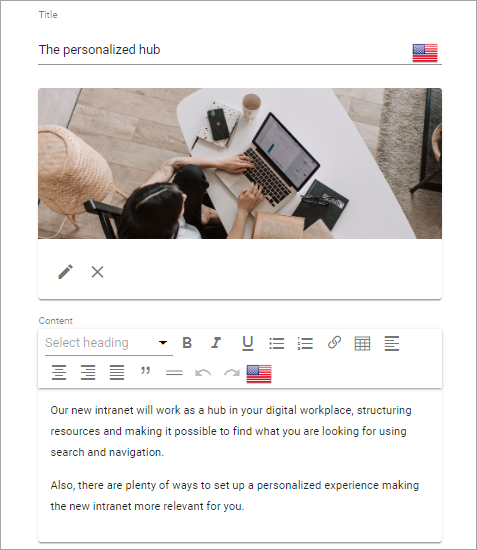
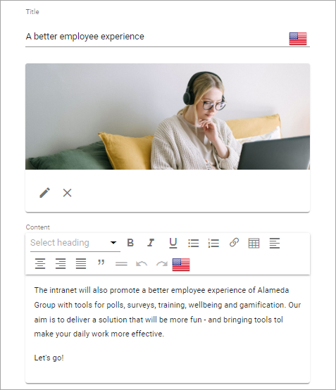
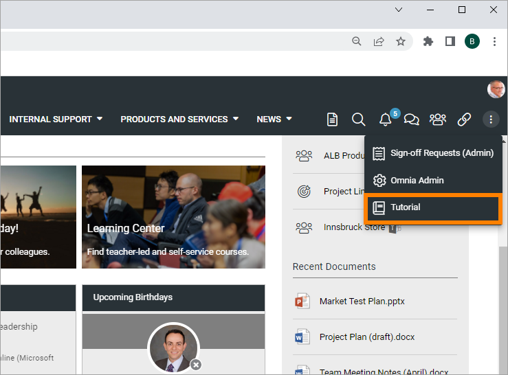
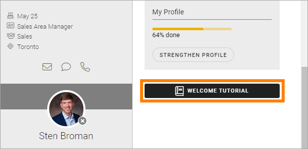
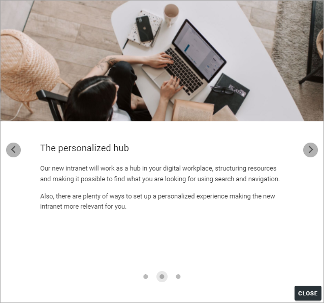
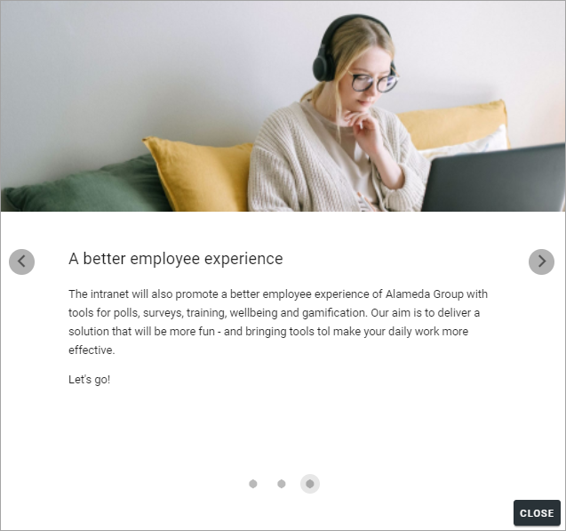
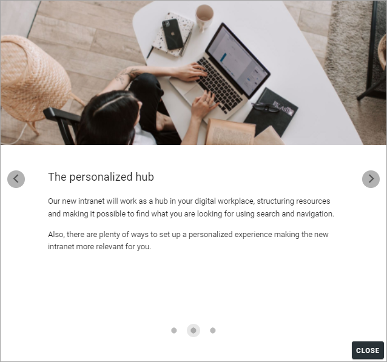
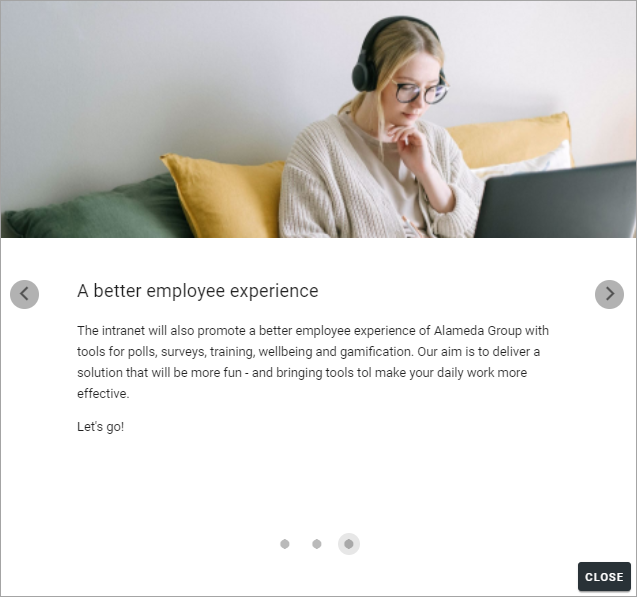

Tutorial implementation example¶
This example consists of three steps:

These settings has been made for the first step:

and these settings for the second step:
and these for the third:
The tutorial is targeted to the start page and will start automatically:

In the Navigation Bar for the Workspace, for the Business Profile, it has been set that tutorials should be available in the Action Menu. The option is shown where a tutorial is available, but not shown otherwise.

As it is an introduction that should be available for everyone, it’s not targeted.
The user experience¶
In this example, the tutorial starts automatically the first time the user enters the start page. If a user would like to see the tutorial a second time, it can be started from the Action Menu:
Or by clicking an Action Button on the start page itself (set up in an Action Button block):
The steps will be shown for users this way:
 



Users can navigate the tutorial using the dots or the arrows: